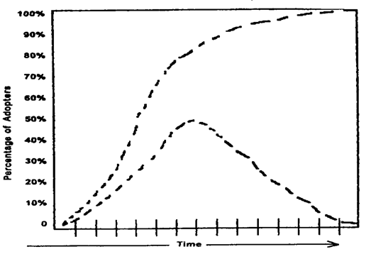
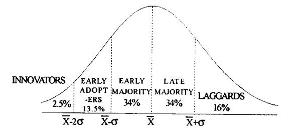

AEXT 392 :: Lecture 11 :: DIFFUSION AND ADOPTION OF INNOVATION

DIFFUSION OF INNOVATIONS
Diffusion is the process by which an innovation is communicated through certain channels over time among the members of a social system. It is a special type of communication, in that the messages are concerned with new ideas.
Elements in the diffusion of innovations :
The four main elements in diffusion of innovations are
- innovation
- communication channels
- time
- social system.
The description for these elements is presented below:
1) The innovation:
An innovation is an idea, practice or object that is perceived as new by an individual or other unit of adoption. The perceived newness of the idea for the individual determines his or her reaction to it. The "newness" aspect of an innovation may be expressed in terms of knowledge, persuasion or a decision to adopt.
In this context, to know about the perceived attributes of innovation would be appropriate which are described in the succeeding paras:
a. Relative advantage:
It is the degree to which an innovation is perceived as better than the idea it supersedes. The degree of relative advantage may be measured in economic terms, but social-prestige factors, convenience and satisfaction are also often the important components.
b. Compatibility:
It is the degree to which an innovation is perceived as being consistent with the existing values, past experiences and needs of potential adopters.
c. Complexity:
It is the degree to which an innovation is perceived as difficult to understand and use. In general, new ideas that are simpler to understand will be adopted more rapidly than innovations that require the adopter to develop new skills and understandings.
d. Trialability:
It is the degree to which an innovation may be experimented with on a limited basis. An innovation that is trialable represents less uncertainty to the individual who is considering it for adoption, as it is possible to learn by doing.
e. Observability:
It is the degree to which the results of an innovation are visible to others. The easier it is for individuals to see the results of an innovation, the more likely they are to adopt.
2) Communication channels:
A communication channel is the means by which messages get from one individual to another. The following classification of channels would help the communicator to use them appropriately:
i) Interpersonal channels - It refers to those which are used for face to face communication between two or more individuals.
ii) Mass media channels - These enable the messages to reach a larger, diverse audience simultaneously in a relatively shorter time. e.g.: Radio and T.V.
iii) Localite channels - They originate within the social system of the receiver. eg: neighbours, relatives, opinion leaders etc.
iv)Cosmopolite channels - They originate outside a particular social system. eg: Extension worker, sales personnel etc.
3. Time:
It is an important element in the diffusion process. Time is an obvious aspect of any communication process. Time does not exist independently of events, but it is an aspect of every activity. The time dimension is involved in diffusion (i) in the innovation - decision process, (ii) in the innovativeness of an individual or other unit of adoption, and (iii) innovation's rate of adoption in a system.
4. Social System:
It is defined as a set of interrelated units that are engaged in joint problem solving to accomplish a common goal. The members or units of a social system may be individuals, informal groups, organisations and / or subsystems. The social system constitutes a boundary within which an innovation diffuses.
INNOVATION - DECISION PROCESS
As an alternative to the "Stages in the adoption process" viz., Awareness, Interest, Evaluation, Trial and Adoption, due to the advancements in diffusion research, currently" Innovation - Decision process" is proposed which enlightens the sequential stages in the adoption - decisions made by individuals or other units of adoption.
The "Innovation - Decision Process" is the process through which an individual (or other decision - making unit) passes from first knowledge of an innovation, to forming an attitude towards the innovation to a decision to adopt or reject, to implementation of the new idea, and to confirmation of this decision.
This process consists of a series of actions and choices over time through which an individual or an organisation evaluates a new idea and decides whether or not to incorporate the new idea into on going practice.
The conceptualization of the model of the innovation decision process consist of the following five stages (as illustrated in fig.27.)
Fig.27. Paradigm on Stages in the Innovation-Decision Process

1. Knowledge stage:
Knowledge occurs when an individual (or the decision - making unit) is exposed to the innovation's existence and gains some understanding of how it functions.
The following three types of knowledge possessed by an individual influence the decisions :
i). Awareness - knowledge motivates an individual to seek "how-to" knowledge and principles knowledge. This type of information - seeking is concentrated as the knowledge stage of the innovation - decision process, but it may also occur at the persuasion and decision stages.
ii). How-to knowledge consists of information necessary to use an innovation properly. When an adequate level of how-to knowledge is not obtained prior to the trial and adoption of an innovation, rejection or discontinuance is likely to result. Change agents could perhaps play their distinctive role to concentrate on "how-to knowledge" at the trial and decision stage in the process.
iii). Principles knowledge consists of information dealing with the functioning principles underlying how the innovation works. It is usually possible to adopt an innovation without principles knowledge, but the danger of misusing the new idea is greater, and discontinuance may result. The long-range competence of individuals to judge future innovations is facilitated by principles knowledge.
2. Persuasion stage
Persuasion occurs when an individual (or other decision - making unit) forms a favourable or unfavourable attitude toward the innovation.
While the mental activity as the knowledge stage was mainly cognitive (or knowing), the main type of thinking at the persuasion function is affective (or feeling). At this stage, a general perception of the innovation is developed. The individual becomes more psychologically involved with the innovation and hence he or she seeks information about the new idea.
3. Decision stage
Decision occurs when an individual (or other decision - making unit) engages in activities that lead to a choice to adopt or reject the innovation.
Adoption is a decision to make full use of an innovation as the best course of action available. Rejection is a decision not to adopt an innovation.
The small - scale trial is often part of the decision to adopt, and is important as a means to decrease the perceived uncertainty of the innovation for the adopter.
4. Implementation stage:
Implementation occurs when an individual (or other decision - making unit) puts an innovation into use. Until the implementation stage, the innovation-decision process has been a strictly mental exercise. But implementation involves overt behaviour change as the new idea is actually part into practice.
Problems of implementation are likely to be more serious when the adopter is an organisation rather than an individual. Reason is that in an organisational setting, a number of individuals are usually involved in the innovation - decision process, and the implementers are often a different set of people from the decision makers.
5. Confirmation stage:
Confirmation occurs when an individual (or other decision - making unit) seeks reinforcement of an innovation - decision already made, but he or she may reverse this previous decision if exposed to conflicting messages about the innovation.
The confirmation stage continues after the decision to adopt or reject for an indefinite period in time. At this stage, the change agents have the additional responsibility of supporting messages to individuals who have previously adopted.
As a sequential effect, there is a possibility for "discontinuance". A discontinuance is a decision to reject an innovation after having previously adopted it. There are two types of discontinuances:
i). Replacement discontinuance - is a decision to reject an idea in order to adopt a better idea that supersedes it.
ii). Disenchantment discontinuance - is a decision to reject an idea as a result of dissatisfaction with its performance.
ADOPTER CATEGORIES
There are different categories of farmers. According to Rogers (1971), the farmers based on their innovativeness can be classified as
1. Innovators (Venturesome)
2. Early adopters (Respectable)
3. Early majority (Deliberate)
4. Late majority (Skeptical)
- Laggards (Traditional)
Characteristics of farmers
All individuals in a social system do not adopt an innovation at the same time. Rather, they adopt in an ordered time sequence, and they may be classified into adopter categories on the basis of when they first begin using a new idea. In technology transfer programme, it is of great practical utility for the extension workers to identify the individuals who are likely to adopt innovations early and who may lag behind.
The adoption of an innovation over time follows a normal, bell-shaped curve when plotted over time on frequency basis. If the cumulative number of adopters is plotted, it results in an S-shaped curve. The S-shaped curve rises slowly at first when there are few adopters in a time period, accelerate to a maximum when about half of the individuals in the system have adopted and then increases at a gradually slower rate as the few remaining individuals finally adopt (Fig. 28.). The S-shaped curve is like that of a 'learning curve' as propounded by the psychologists. Each adoption in the social system is in a sense equivalent to a learning trial by an individual.
Fig.28. The bell shaped frequency curve and the S-shaped cumulative curve
for adopter categories

Both of these curves are for the same data, the adoption of an innovation over time by the members of a social system. But the bell-shaped curve shows these data in terms of the number of individuals adopting each year, whereas the S-shaped curve shows these data on cumulative basis.
The distribution of adopters over time closely approaches normality, and may be explained by the statistical concept of normal curve. The distribution of the adopters may be partitioned into five adopter categories by using the mean (x) and standard deviation. The area lying to the left of the mean time of adoption minus two standard deviations includes 2.5 per cent of the individuals who are the first to adopt an innovation and are known as innovators. The next 13.5 per cent between the mean minus one standard deviation and the mean minus two standard deviations to adopt the new idea are called as early adopters. The next 34 per cent of the adopters between the mean date of adoption and minus one standard deviation are known as early majority. Between the mean and one standard deviation to the right of the mean are located the next 34 per cent to adopt the new idea, the late majority. The last 16 per cent to the right of mean plus one standard deviation are the last to adopt the innovation the laggards. The five-adopter categories are conceptualized as ideal types and are presented in Figure29.

Fig. 29. Adopter categorization on the basis of innovativeness
The innovativeness dimension, as measured by the time at which an individual adopts an innovation, is continuous. However, this variable may be partititioned into five adopter categories by laying of standard deviations from the average time of adoption.
The detailed information on the characteristics of adopter categories is presented in the succeeding pages:
Innovators: Venturesome
Observers have noted that venturesomeness is almost an obsession with innovators. They are eager to try new ideas. This interest leads them out of a local circle of peers and into more cosmopolite social relationships. Communication patterns and friendships among a clique of innovators are common, eventhough the geographical distance between the innovators may be great. Being an innovator has several prerequisites. These include control of substantial financial resources to absorb the understand and apply complex technical knowledge.
The salient value of the innovator is venturesomeness. He desires the hazardous, the rash, the daring, and the risky. The innovator also must be willing to accept an occasional setback when one of the new ideas he adopts proves unsuccessful.
These are the first people to adopt a new idea, much ahead of other people. They are very few in numbers, probably not more than one or two in a community.
Characteristics:
- Have larger farms.
- High net worth and risk capital.
- Willing to take risks.
- Usually not past middle age
- Generally well educated
- Have respect and prestige in progressive communities but not in conservative type of communities.
- Mentally alert and actively seeking new ideas.
- Their sphere of influence and activity often goes beyond the community boundaries.
- They have many formal and informal contact outside the immediate locality.
- They often by-pass the local extension worker in getting information from the originating sources, and may learn about new things even before he does. They sometimes manage to get samples of seeds or chemicals even before they are released for public use.
- They subscribe to many farm magazines and specialised publications.
- Other farmers may watch the innovators and know what they are doing but the innovators are not generally named by other farmers as "neighbours and friends" to whom they go for information.
Early Adopter: Respectable
Early adopters are a more integrated part of the local social system than are innovators. Whereas innovators are cosmopolites, early adopters are localities. This adopter’s category, more than any other, has the greatest degree of opinion leadership in most social systems. Potential adopters look to early adopters for advice and information about the innovation. The early adopter is considered by many as "the man to check with" before using a new idea. This adopter category is generally sought by change agents to be a local missionary for speeding the diffusion process. Because early adopters are not too far ahead of the average individual in innovativeness, they serve as a role model for many other members of a social system. Members of a social system respect the early adopter. The early adopter is respected by his peers. He is the embodiment of successful and discrete use of new ideas. And the early adopter knows that he must continue to earn this esteem of his colleagues if his position in the social structure is to be maintained.
Characteristics:
- Younger than those who have a slower adoption rate, but not necessarily younger than the innovators
- They are not the persons who test the untried ideas but they are quickest to use tried ideas in their own situations.
- Have large farms.
- Higher education than those who adopt more slowly.
- High income.
- They participate more in the format activities of the community.
- They also participate more in government programmes.
- This group usually furnishes a disproportionate amount of the formal leadership (elected positions) in the community.
- They read papers and farm journals and receive more bulletins than people who adopt later.
- They may be regarded as community adoption leaders.
Early Majority: Deliberate (Local Adoption Leaders)
The early majority adopt new ideas just before the average member of a social system. The early majority interact frequently with their peers, but leadership position; are rarely held by them. The early majority's unique position; between the very early and relatively late to adopt make; them an important link in the diffusion process.
The early majority may deliberate for some time before completely adopting a new idea. Their innovation-decision is relatively longer than that of the innovator and the early adopter. "Be not the last to lay the old aside, nor the first by which the new is tried", might be the motto of the early majority. They follow with deliberate willingness in adopting innovations, but seldom lead.
Characteristics:
- Slightly above average in age, education and farming experience.
- They take a few more farm journals and bulletins than the average.
- They have medium high social and economic status.
- Less active in formal groups than early adopters, but more active than those adopting later.
- In many cases, they are not formal leaders in the association
- They also attend extension meetings and farm demonstrations.
- They are most likely to be informal resources than early adopters and innovators, and so cannot afford to make hasty or poor decisions.
- They associate mainly with people of their own community.
- They value highly the opinions their neighbours and friends hold about them; for this is their main source of status and prestige.
- They are mostly mentioned as "neighbours and friends" from whom the majority of farmers seek information.
Late Majority: Skeptical
The late majority adopt new ideas just after the average member of a social system. Adoption may be both an economic necessity and the answer to increasing social pressures. Innovations are approached with a skeptical and cautions air, and the late majority do not adopt until most other in their social system have done so. The weight of system norms must definitely favour the innovation before the late majority are convinced. They can be persuaded of the utility of new ideas, but the pressure of peers is necessary to motivate adoption.
Characteristics:
- Those in this group have less education and are older than the early majority.
- They form the major part 9( formal organisational membership, although they participate less in such formal groups.
- They take fewer leadership roles than the earlier adopters.
- They take and read fewer papers, magazines and bulletins, than the early majority.
- They do not participate in as many activities outside the community as do people that adopt earlier.
Laggards: Traditional
Laggards are the last to adopt an innovation. They possess almost no opinion leadership. They are the most localite in their outlook of all adopter categories, many are near isolates. The point of reference for the laggard is the past. Decisions are usually made in terms of what has been done in previous generations. This individual interacts primarily with others who have traditional values. When laggards finally adopt an innovation, it may already have been superseded by another more recent idea which the innovators are already using. Laggards tend to be frankly suspicious of innovations, innovators, and change agents. Their tradition direction slows the innovation decision process to a crawl. Adoption lags far behind knowledge of the idea. Alienation from a too-fast-moving world is apparent in much of the laggard's outlook. While most individuals in a social system are looking to the road of change ahead, the laggards has his attention fixed on the rear-view mirror.
Characteristics:
- Least education.
- Oldest.
- Participate least in formal organisations, cooperatives and government programmes.
- They hardly read farm magazines and bulletins.
| Download this lecture as PDF here |